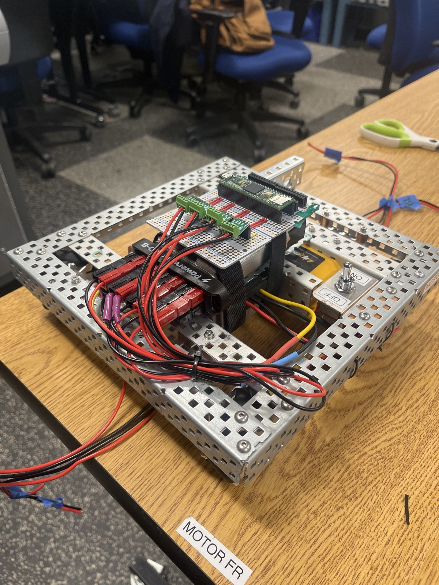
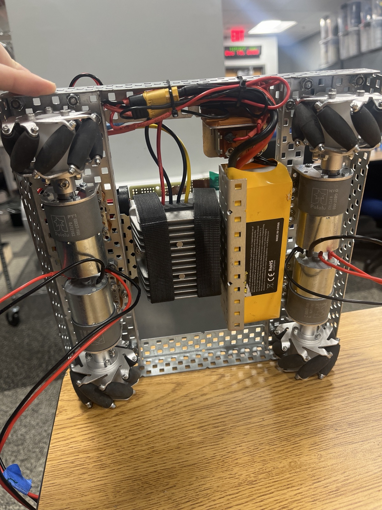

01 Chassis


Designed, modeled, and assembled a 10 x 10 inch chassis, mostly VEX metal, packing four DC motors and the electronics into the smallest footprint that still left room to work. It is the foundation everything else bolts to, so it had to leave clean interfaces for the bridge deployment, the thruster pickup, and the block manipulators without giving up any of the envelope.